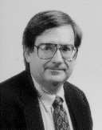

|
 |
ACM Fellow Profile
fraileyd@acm.org |
 |
Please elaborate on the work leading up to your achieving the distinction of ACM Fellow:
A combination of research into operating systems and optimizing compilers; service in ACM and other
professional societies as an officer, program chairman, and facilitator; and many educational activities in
both the industrial and academic worlds.
In your "Software Project Planning and Management" course at SMU, you cover
several lifecycle models: waterfall, spiral and tornado. How do you describe the tornado model?
This is actually a model for building life cycle models, developed by the corporate software engineering
process group at Texas Instruments in the early 1990's. It starts with a simple construct called the "basic
development cycle," consisting of four generic steps: establish requirements, design, implement, and
evaluate. This cycle is at the heart of just about every software life cycle model, indeed every product
development lifecycle. In the tornado model, the basic cycle is used as a building block, with cycles fitted
together and tailored to form whatever lifecycle model is required. As an example, the spiral model is a
sequence of increasingly larger basic cycles. A waterfall is one basic cycle laid out in a sequence. A
waterfall with a prototype during the design phase is simply a basic cycle that calls another one recursively
during the design step. An outline of the model is included in the following paper:
"Concurrent Engineering and the Software Process," Frailey, Dennis J. in Proceedings, 2nd International Conference on the Software Process, IEEE Computer Society Press, 1993, pp. 103-114, ISBN 0-8186-3600-9, IEEE catalog no. 93TH0509-0.
What are your current research interests?
I do very little that would be construed as pure research these days. I have a lot of success taking ideas from
other disciplines and applying them to software engineering problems. For example, my current technical
focus is improving software cycle time. I'm borrowing and blending ideas from industrial engineering,
compiler optimization, and business process reengineering. Much of my work is in educating and in
transitioning technology and knowledge between the academic and industrial communities, especially in the
areas of real time systems, software engineering metrics, and software process improvement.
What are your current outside interests?
Collecting mystery fiction, listening to classical and jazz music, and travelling.
What was the greatest influence on you?
My parents. They believed in a sound, well-rounded education; taught me to love good music;
and encouraged me to become independent.
What was your greatest influence?
Inspiring many students and co-workers to become productive professionals and to be active members of
their professional associations.
Who do you think has made the greatest impact on software engineering?
Barry Boehm. Most of what we do in commercial software development is founded on his work in
software engineering economics, risk management and lifecycle models.
What's your favorite story about software engineering or development?
The bug that caused itself. During my disseration work I wrote a self-compiler. I found a bug having to do
with conversion of character strings representing real numbers into valid floating point constants. In tracing
the source of the bug, I discovered that the bad constants generated by this bug were the cause of the error
in the conversion process! I never did figure out how the bug got there in the first place, but I had to use
"bit tweezers" (patching binary punched cards) to fix the problem.
Which computer-related areas are most in need of investment by government,
business or education?
Developing a sound underlying foundation for software engineering, not just the design aspects but the
entire gamut of what is done to produce software, such as configuration management, quality engineering,
test engineering, and even document generation.
What advice do you have for computer science/software engineering students?
I have five points:
- Computing is an applied field and until you get immersed in the untidy world of actually developing and applying software and computer systems, you will never truly understand many of the issues. Seek opportunities to get involved in real applications and then extract fundamental principles from what you have learned.
- Computing is a marriage of hardware and software. Many mistakes have been made by specialists in one of these areas who did not understand the subtleties of the other. Learn both hardware and software principles if you seek to understand computing.
- All aspects of computing, no matter how seemingly mundane and lacking in established academic foundations, are important and worthy. I still recall the faculty committee who denied a student's Ph.D. proposal because his research was in databases and they felt databases "had no academic merit." This was in the early 1970's, before people realized what an important and indeed academically rich field that is. I find that too many people even today have prejudices against some of the things we do in computing because the theoretical foundations have not yet been established or the new things do not fit the established mold, and thus people perceive them to be of lesser importance.
- Standardization and widespread use have been more important to success in computing than technical superiority. Just look at how the computing field evolved to see the truth of this.
- The small computers always take over the market from the larger ones. Aim for the small systems. In the end, you will be dominant (until even smaller ones take over). But learn your lessons from those who worked before you on larger systems. Reuse their ideas shamelessly. To paraphrase Newton and Hamming, learn to stand on the shoulders of giants.
What is the most often-overlooked risk in software engineering?
The risk that you don't really understand what needs to be done -- especially when the software developer is
arrogant enough to think she or he knows better than the end user.
What is the most-repeated mistake in software engineering?
Failing to plan integration from the beginning. Delaying the plan until the end and then discovering that you
should have done things very differently in order to make the parts come together smoothly.
What are the most exciting/promising software engineering ideas or techniques on the horizon?
Elimination of coding and testing through more effective, higher level tools and languages for analysis,
design, and quality engineering. Not only is this happening, but it MUST happen. Otherwise,
there will never be enough software developers to do the work.
What are your plans for the future or the next five years?
To be a part of the emerging software engineering education field. I see it as the big growth area in
computing education and as offering many opportunities for innovative delivery of knowledge.
You've written about analogies between improving software and improving education; for example, you
compare designing around the I/O constraints of hardware to designing around students and their
constraints, such as work and home responsibilities. What are some of the opportunities you see in the
software engineering education field, particularly with regard to non-traditional education channels or
settings?
I believe there will be a large growth in non-traditional education opportunities. Here are some of the
growth areas I see right now:
- Continuing education in software development and software project management for people in various technical disciplines. This will be driven by the ongoing shortage of well-qualified software developers, software's ever-changing tools and methods, and the significant base of highly capable technical people who find that software is playing a larger role in their work.
- Backfilling for corporate training and education organizations. I see many companies reducing or diminishing the role of their in-house training organs due to pressures to cut overhead costs and focus their efforts on their primary businesses. They will increasingly turn to subcontractors for this kind of education. The need for the education and training will not go away.
- Preparation for certification and licensing. There are programs already in place for vendor-specific certification, software quality engineering certification, and several others. I see this expanding to other forms of certification and licensing as more of these come along.
Who will provide this non-traditional education? And how?
A big part of this need will be served by commercial education and training companies, often small
one and two-person contractors. I see this especially for focused topics, such as design methods,
software risk management, software cost estimating, and cycle time improvement. The university's
primary involvement may be through non-credit, continuing education programs. There will also
be growth in masters degrees from traditional academic sources, such as computer science
and electrical engineering departments that offer software engineering degrees. Other important
suppliers will be trade schools and community colleges. All of these will take advantage of distance
education and non-traditional delivery approaches, such as Internet, Computer Aided Instruction,
and weekend/evening education. The key to serving this market is to realize that these are not
traditional students. They are living, working, and having families. One cannot serve them well
with the conventional "3 days a week on campus" education model.
You mentioned licensing. Do you think there will be a rapid increase in
states seeking to license software engineers?
I believe there will be a large growth in many forms of certification and licensing of software
practitioners. These are mechanisms that society traditionally uses when faced with a flood of
people claiming to be qualified in a field where the layman cannot evaluate competence and where
there is potential for great harm by incompetent practitioners. Licensing by states is especially likely
for safety-critical applications, and I suspect it will "take off" because political entities need a way to
respond to the growing public perception of genuine problems due to poorly developed software.
Please give us any additional comments for the profile:
Bill Wulf once said, "there is only one nature." All the rest is human artifice. Resist the urge to
associate with one academic discipline to the exclusion of others, for the distinction between
disciplines is purely artificial. (And we invent specialized languages that tend to preserve these
artificial boundaries). Never specialize to the point where you fail to see the wonderful things being
done elsewhere that may give you great insights into your own field.
Thank you!
Profiled by Greg Cooper